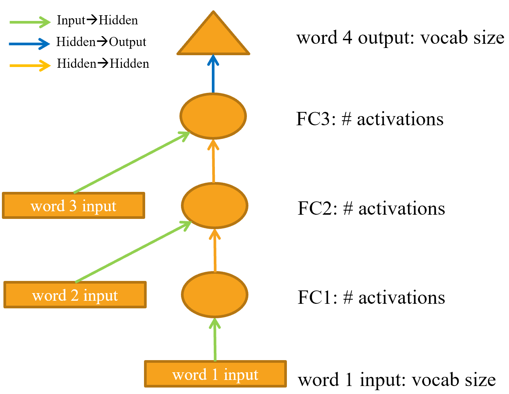
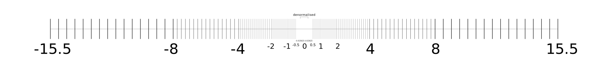
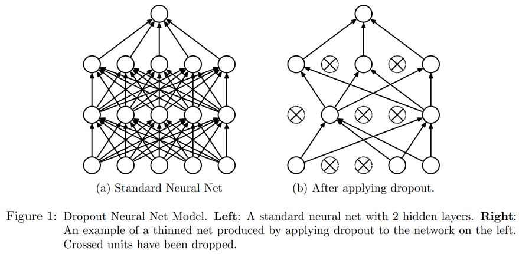
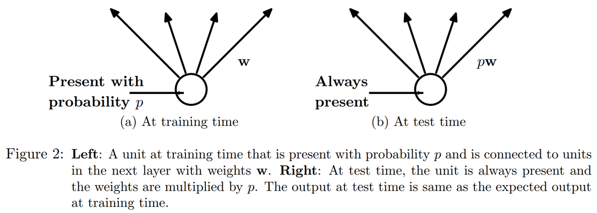

#hide
! [ -e /content ] && pip install -Uqq fastbook
import fastbook
fastbook.setup_book()A Language Model from Scratch
#hide
from fastbook import *[[chapter_nlp_dive]]
We’re now ready to go deep… deep into deep learning! You already learned how to train a basic neural network, but how do you go from there to creating state-of-the-art models? In this part of the book we’re going to uncover all of the mysteries, starting with language models.
You saw in <
The Data
Whenever we start working on a new problem, we always first try to think of the simplest dataset we can that will allow us to try out methods quickly and easily, and interpret the results. When we started working on language modeling a few years ago we didn’t find any datasets that would allow for quick prototyping, so we made one. We call it Human Numbers, and it simply contains the first 10,000 numbers written out in English.
j: One of the most common practical mistakes I see even amongst highly experienced practitioners is failing to use appropriate datasets at appropriate times during the analysis process. In particular, most people tend to start with datasets that are too big and too complicated.
We can download, extract, and take a look at our dataset in the usual way:
from fastai.text.all import *
path = untar_data(URLs.HUMAN_NUMBERS)#hide
Path.BASE_PATH = pathpath.ls()(#2) [Path('train.txt'),Path('valid.txt')]Let’s open those two files and see what’s inside. At first we’ll join all of the texts together and ignore the train/valid split given by the dataset (we’ll come back to that later):
lines = L()
with open(path/'train.txt') as f: lines += L(*f.readlines())
with open(path/'valid.txt') as f: lines += L(*f.readlines())
lines(#9998) ['one \n','two \n','three \n','four \n','five \n','six \n','seven \n','eight \n','nine \n','ten \n'...]We take all those lines and concatenate them in one big stream. To mark when we go from one number to the next, we use a . as a separator:
text = ' . '.join([l.strip() for l in lines])
text[:100]'one . two . three . four . five . six . seven . eight . nine . ten . eleven . twelve . thirteen . fo'We can tokenize this dataset by splitting on spaces:
tokens = text.split(' ')
tokens[:10]['one', '.', 'two', '.', 'three', '.', 'four', '.', 'five', '.']To numericalize, we have to create a list of all the unique tokens (our vocab):
vocab = L(*tokens).unique()
vocab(#30) ['one','.','two','three','four','five','six','seven','eight','nine'...]Then we can convert our tokens into numbers by looking up the index of each in the vocab:
word2idx = {w:i for i,w in enumerate(vocab)}
nums = L(word2idx[i] for i in tokens)
nums(#63095) [0,1,2,1,3,1,4,1,5,1...]Now that we have a small dataset on which language modeling should be an easy task, we can build our first model.
Our First Language Model from Scratch
One simple way to turn this into a neural network would be to specify that we are going to predict each word based on the previous three words. We could create a list of every sequence of three words as our independent variables, and the next word after each sequence as the dependent variable.
We can do that with plain Python. Let’s do it first with tokens just to confirm what it looks like:
L((tokens[i:i+3], tokens[i+3]) for i in range(0,len(tokens)-4,3))(#21031) [(['one', '.', 'two'], '.'),(['.', 'three', '.'], 'four'),(['four', '.', 'five'], '.'),(['.', 'six', '.'], 'seven'),(['seven', '.', 'eight'], '.'),(['.', 'nine', '.'], 'ten'),(['ten', '.', 'eleven'], '.'),(['.', 'twelve', '.'], 'thirteen'),(['thirteen', '.', 'fourteen'], '.'),(['.', 'fifteen', '.'], 'sixteen')...]Now we will do it with tensors of the numericalized values, which is what the model will actually use:
seqs = L((tensor(nums[i:i+3]), nums[i+3]) for i in range(0,len(nums)-4,3))
seqs(#21031) [(tensor([0, 1, 2]), 1),(tensor([1, 3, 1]), 4),(tensor([4, 1, 5]), 1),(tensor([1, 6, 1]), 7),(tensor([7, 1, 8]), 1),(tensor([1, 9, 1]), 10),(tensor([10, 1, 11]), 1),(tensor([ 1, 12, 1]), 13),(tensor([13, 1, 14]), 1),(tensor([ 1, 15, 1]), 16)...]We can batch those easily using the DataLoader class. For now we will split the sequences randomly:
bs = 64
cut = int(len(seqs) * 0.8)
dls = DataLoaders.from_dsets(seqs[:cut], seqs[cut:], bs=64, shuffle=False)We can now create a neural network architecture that takes three words as input, and returns a prediction of the probability of each possible next word in the vocab. We will use three standard linear layers, but with two tweaks.
The first tweak is that the first linear layer will use only the first word’s embedding as activations, the second layer will use the second word’s embedding plus the first layer’s output activations, and the third layer will use the third word’s embedding plus the second layer’s output activations. The key effect of this is that every word is interpreted in the information context of any words preceding it.
The second tweak is that each of these three layers will use the same weight matrix. The way that one word impacts the activations from previous words should not change depending on the position of a word. In other words, activation values will change as data moves through the layers, but the layer weights themselves will not change from layer to layer. So, a layer does not learn one sequence position; it must learn to handle all positions.
Since layer weights do not change, you might think of the sequential layers as “the same layer” repeated. In fact, PyTorch makes this concrete; we can just create one layer, and use it multiple times.
Our Language Model in PyTorch
We can now create the language model module that we described earlier:
class LMModel1(Module):
def __init__(self, vocab_sz, n_hidden):
self.i_h = nn.Embedding(vocab_sz, n_hidden)
self.h_h = nn.Linear(n_hidden, n_hidden)
self.h_o = nn.Linear(n_hidden,vocab_sz)
def forward(self, x):
h = F.relu(self.h_h(self.i_h(x[:,0])))
h = h + self.i_h(x[:,1])
h = F.relu(self.h_h(h))
h = h + self.i_h(x[:,2])
h = F.relu(self.h_h(h))
return self.h_o(h)As you see, we have created three layers:
- The embedding layer (
i_h, for input to hidden) - The linear layer to create the activations for the next word (
h_h, for hidden to hidden) - A final linear layer to predict the fourth word (
h_o, for hidden to output)
This might be easier to represent in pictorial form, so let’s define a simple pictorial representation of basic neural networks. <

Each shape represents activations: rectangle for input, circle for hidden (inner) layer activations, and triangle for output activations. We will use those shapes (summarized in <

An arrow represents the actual layer computation—i.e., the linear layer followed by the activation function. Using this notation, <

To simplify things, we’ve removed the details of the layer computation from each arrow. We’ve also color-coded the arrows, such that all arrows with the same color have the same weight matrix. For instance, all the input layers use the same embedding matrix, so they all have the same color (green).
Let’s try training this model and see how it goes:
learn = Learner(dls, LMModel1(len(vocab), 64), loss_func=F.cross_entropy,
metrics=accuracy)
learn.fit_one_cycle(4, 1e-3)| epoch | train_loss | valid_loss | accuracy | time |
|---|---|---|---|---|
| 0 | 1.824297 | 1.970941 | 0.467554 | 00:02 |
| 1 | 1.386973 | 1.823242 | 0.467554 | 00:02 |
| 2 | 1.417556 | 1.654497 | 0.494414 | 00:02 |
| 3 | 1.376440 | 1.650849 | 0.494414 | 00:02 |
To see if this is any good, let’s check what a very simple model would give us. In this case we could always predict the most common token, so let’s find out which token is most often the target in our validation set:
n,counts = 0,torch.zeros(len(vocab))
for x,y in dls.valid:
n += y.shape[0]
for i in range_of(vocab): counts[i] += (y==i).long().sum()
idx = torch.argmax(counts)
idx, vocab[idx.item()], counts[idx].item()/n(tensor(29), 'thousand', 0.15165200855716662)The most common token has the index 29, which corresponds to the token thousand. Always predicting this token would give us an accuracy of roughly 15%, so we are faring way better!
A: My first guess was that the separator would be the most common token, since there is one for every number. But looking at
tokensreminded me that large numbers are written with many words, so on the way to 10,000 you write “thousand” a lot: five thousand, five thousand and one, five thousand and two, etc. Oops! Looking at your data is great for noticing subtle features and also embarrassingly obvious ones.
This is a nice first baseline. Let’s see how we can refactor it with a loop.
Our First Recurrent Neural Network
Looking at the code for our module, we could simplify it by replacing the duplicated code that calls the layers with a for loop. As well as making our code simpler, this will also have the benefit that we will be able to apply our module equally well to token sequences of different lengths—we won’t be restricted to token lists of length three:
class LMModel2(Module):
def __init__(self, vocab_sz, n_hidden):
self.i_h = nn.Embedding(vocab_sz, n_hidden)
self.h_h = nn.Linear(n_hidden, n_hidden)
self.h_o = nn.Linear(n_hidden,vocab_sz)
def forward(self, x):
h = 0
for i in range(3):
h = h + self.i_h(x[:,i])
h = F.relu(self.h_h(h))
return self.h_o(h)Let’s check that we get the same results using this refactoring:
learn = Learner(dls, LMModel2(len(vocab), 64), loss_func=F.cross_entropy,
metrics=accuracy)
learn.fit_one_cycle(4, 1e-3)| epoch | train_loss | valid_loss | accuracy | time |
|---|---|---|---|---|
| 0 | 1.816274 | 1.964143 | 0.460185 | 00:02 |
| 1 | 1.423805 | 1.739964 | 0.473259 | 00:02 |
| 2 | 1.430327 | 1.685172 | 0.485382 | 00:02 |
| 3 | 1.388390 | 1.657033 | 0.470406 | 00:02 |
We can also refactor our pictorial representation in exactly the same way, as shown in <
You will see that there is a set of activations that are being updated each time through the loop, stored in the variable h—this is called the hidden state.
Jargon: hidden state: The activations that are updated at each step of a recurrent neural network.
A neural network that is defined using a loop like this is called a recurrent neural network (RNN). It is important to realize that an RNN is not a complicated new architecture, but simply a refactoring of a multilayer neural network using a for loop.
A: My true opinion: if they were called “looping neural networks,” or LNNs, they would seem 50% less daunting!
Now that we know what an RNN is, let’s try to make it a little bit better.
Improving the RNN
Looking at the code for our RNN, one thing that seems problematic is that we are initializing our hidden state to zero for every new input sequence. Why is that a problem? We made our sample sequences short so they would fit easily into batches. But if we order the samples correctly, those sample sequences will be read in order by the model, exposing the model to long stretches of the original sequence.
Another thing we can look at is having more signal: why only predict the fourth word when we could use the intermediate predictions to also predict the second and third words?
Let’s see how we can implement those changes, starting with adding some state.
Maintaining the State of an RNN
Because we initialize the model’s hidden state to zero for each new sample, we are throwing away all the information we have about the sentences we have seen so far, which means that our model doesn’t actually know where we are up to in the overall counting sequence. This is easily fixed; we can simply move the initialization of the hidden state to __init__.
But this fix will create its own subtle, but important, problem. It effectively makes our neural network as deep as the entire number of tokens in our document. For instance, if there were 10,000 tokens in our dataset, we would be creating a 10,000-layer neural network.
To see why this is the case, consider the original pictorial representation of our recurrent neural network in <for loop. You can see each layer corresponds with one token input. When we talk about the representation of a recurrent neural network before refactoring with the for loop, we call this the unrolled representation. It is often helpful to consider the unrolled representation when trying to understand an RNN.
The problem with a 10,000-layer neural network is that if and when you get to the 10,000th word of the dataset, you will still need to calculate the derivatives all the way back to the first layer. This is going to be very slow indeed, and very memory-intensive. It is unlikely that you’ll be able to store even one mini-batch on your GPU.
The solution to this problem is to tell PyTorch that we do not want to back propagate the derivatives through the entire implicit neural network. Instead, we will just keep the last three layers of gradients. To remove all of the gradient history in PyTorch, we use the detach method.
Here is the new version of our RNN. It is now stateful, because it remembers its activations between different calls to forward, which represent its use for different samples in the batch:
class LMModel3(Module):
def __init__(self, vocab_sz, n_hidden):
self.i_h = nn.Embedding(vocab_sz, n_hidden)
self.h_h = nn.Linear(n_hidden, n_hidden)
self.h_o = nn.Linear(n_hidden,vocab_sz)
self.h = 0
def forward(self, x):
for i in range(3):
self.h = self.h + self.i_h(x[:,i])
self.h = F.relu(self.h_h(self.h))
out = self.h_o(self.h)
self.h = self.h.detach()
return out
def reset(self): self.h = 0This model will have the same activations whatever sequence length we pick, because the hidden state will remember the last activation from the previous batch. The only thing that will be different is the gradients computed at each step: they will only be calculated on sequence length tokens in the past, instead of the whole stream. This approach is called backpropagation through time (BPTT).
jargon: Back propagation through time (BPTT): Treating a neural net with effectively one layer per time step (usually refactored using a loop) as one big model, and calculating gradients on it in the usual way. To avoid running out of memory and time, we usually use truncated BPTT, which “detaches” the history of computation steps in the hidden state every few time steps.
To use LMModel3, we need to make sure the samples are going to be seen in a certain order. As we saw in <dset[0] then the second batch should have dset[1] as the first line, so that the model sees the text flowing.
LMDataLoader was doing this for us in <
To do this, we are going to rearrange our dataset. First we divide the samples into m = len(dset) // bs groups (this is the equivalent of splitting the whole concatenated dataset into, for example, 64 equally sized pieces, since we’re using bs=64 here). m is the length of each of these pieces. For instance, if we’re using our whole dataset (although we’ll actually split it into train versus valid in a moment), that will be:
m = len(seqs)//bs
m,bs,len(seqs)(328, 64, 21031)The first batch will be composed of the samples:
(0, m, 2*m, ..., (bs-1)*m)the second batch of the samples:
(1, m+1, 2*m+1, ..., (bs-1)*m+1)and so forth. This way, at each epoch, the model will see a chunk of contiguous text of size 3*m (since each text is of size 3) on each line of the batch.
The following function does that reindexing:
def group_chunks(ds, bs):
m = len(ds) // bs
new_ds = L()
for i in range(m): new_ds += L(ds[i + m*j] for j in range(bs))
return new_dsThen we just pass drop_last=True when building our DataLoaders to drop the last batch that does not have a shape of bs. We also pass shuffle=False to make sure the texts are read in order:
cut = int(len(seqs) * 0.8)
dls = DataLoaders.from_dsets(
group_chunks(seqs[:cut], bs),
group_chunks(seqs[cut:], bs),
bs=bs, drop_last=True, shuffle=False)The last thing we add is a little tweak of the training loop via a Callback. We will talk more about callbacks in <reset method of our model at the beginning of each epoch and before each validation phase. Since we implemented that method to zero the hidden state of the model, this will make sure we start with a clean state before reading those continuous chunks of text. We can also start training a bit longer:
learn = Learner(dls, LMModel3(len(vocab), 64), loss_func=F.cross_entropy,
metrics=accuracy, cbs=ModelResetter)
learn.fit_one_cycle(10, 3e-3)| epoch | train_loss | valid_loss | accuracy | time |
|---|---|---|---|---|
| 0 | 1.677074 | 1.827367 | 0.467548 | 00:02 |
| 1 | 1.282722 | 1.870913 | 0.388942 | 00:02 |
| 2 | 1.090705 | 1.651793 | 0.462500 | 00:02 |
| 3 | 1.005092 | 1.613794 | 0.516587 | 00:02 |
| 4 | 0.965975 | 1.560775 | 0.551202 | 00:02 |
| 5 | 0.916182 | 1.595857 | 0.560577 | 00:02 |
| 6 | 0.897657 | 1.539733 | 0.574279 | 00:02 |
| 7 | 0.836274 | 1.585141 | 0.583173 | 00:02 |
| 8 | 0.805877 | 1.629808 | 0.586779 | 00:02 |
| 9 | 0.795096 | 1.651267 | 0.588942 | 00:02 |
This is already better! The next step is to use more targets and compare them to the intermediate predictions.
Creating More Signal
Another problem with our current approach is that we only predict one output word for each three input words. That means that the amount of signal that we are feeding back to update weights with is not as large as it could be. It would be better if we predicted the next word after every single word, rather than every three words, as shown in <

This is easy enough to add. We need to first change our data so that the dependent variable has each of the three next words after each of our three input words. Instead of 3, we use an attribute, sl (for sequence length), and make it a bit bigger:
sl = 16
seqs = L((tensor(nums[i:i+sl]), tensor(nums[i+1:i+sl+1]))
for i in range(0,len(nums)-sl-1,sl))
cut = int(len(seqs) * 0.8)
dls = DataLoaders.from_dsets(group_chunks(seqs[:cut], bs),
group_chunks(seqs[cut:], bs),
bs=bs, drop_last=True, shuffle=False)Looking at the first element of seqs, we can see that it contains two lists of the same size. The second list is the same as the first, but offset by one element:
[L(vocab[o] for o in s) for s in seqs[0]][(#16) ['one','.','two','.','three','.','four','.','five','.'...],
(#16) ['.','two','.','three','.','four','.','five','.','six'...]]Now we need to modify our model so that it outputs a prediction after every word, rather than just at the end of a three-word sequence:
class LMModel4(Module):
def __init__(self, vocab_sz, n_hidden):
self.i_h = nn.Embedding(vocab_sz, n_hidden)
self.h_h = nn.Linear(n_hidden, n_hidden)
self.h_o = nn.Linear(n_hidden,vocab_sz)
self.h = 0
def forward(self, x):
outs = []
for i in range(sl):
self.h = self.h + self.i_h(x[:,i])
self.h = F.relu(self.h_h(self.h))
outs.append(self.h_o(self.h))
self.h = self.h.detach()
return torch.stack(outs, dim=1)
def reset(self): self.h = 0This model will return outputs of shape bs x sl x vocab_sz (since we stacked on dim=1). Our targets are of shape bs x sl, so we need to flatten those before using them in F.cross_entropy:
def loss_func(inp, targ):
return F.cross_entropy(inp.view(-1, len(vocab)), targ.view(-1))We can now use this loss function to train the model:
learn = Learner(dls, LMModel4(len(vocab), 64), loss_func=loss_func,
metrics=accuracy, cbs=ModelResetter)
learn.fit_one_cycle(15, 3e-3)| epoch | train_loss | valid_loss | accuracy | time |
|---|---|---|---|---|
| 0 | 3.103298 | 2.874341 | 0.212565 | 00:01 |
| 1 | 2.231964 | 1.971280 | 0.462158 | 00:01 |
| 2 | 1.711358 | 1.813547 | 0.461182 | 00:01 |
| 3 | 1.448516 | 1.828176 | 0.483236 | 00:01 |
| 4 | 1.288630 | 1.659564 | 0.520671 | 00:01 |
| 5 | 1.161470 | 1.714023 | 0.554932 | 00:01 |
| 6 | 1.055568 | 1.660916 | 0.575033 | 00:01 |
| 7 | 0.960765 | 1.719624 | 0.591064 | 00:01 |
| 8 | 0.870153 | 1.839560 | 0.614665 | 00:01 |
| 9 | 0.808545 | 1.770278 | 0.624349 | 00:01 |
| 10 | 0.758084 | 1.842931 | 0.610758 | 00:01 |
| 11 | 0.719320 | 1.799527 | 0.646566 | 00:01 |
| 12 | 0.683439 | 1.917928 | 0.649821 | 00:01 |
| 13 | 0.660283 | 1.874712 | 0.628581 | 00:01 |
| 14 | 0.646154 | 1.877519 | 0.640055 | 00:01 |
We need to train for longer, since the task has changed a bit and is more complicated now. But we end up with a good result… At least, sometimes. If you run it a few times, you’ll see that you can get quite different results on different runs. That’s because effectively we have a very deep network here, which can result in very large or very small gradients. We’ll see in the next part of this chapter how to deal with this.
Now, the obvious way to get a better model is to go deeper: we only have one linear layer between the hidden state and the output activations in our basic RNN, so maybe we’ll get better results with more.
Multilayer RNNs
In a multilayer RNN, we pass the activations from our recurrent neural network into a second recurrent neural network, like in <

The unrolled representation is shown in <
Let’s see how to implement this in practice.
The Model
We can save some time by using PyTorch’s RNN class, which implements exactly what we created earlier, but also gives us the option to stack multiple RNNs, as we have discussed:
class LMModel5(Module):
def __init__(self, vocab_sz, n_hidden, n_layers):
self.i_h = nn.Embedding(vocab_sz, n_hidden)
self.rnn = nn.RNN(n_hidden, n_hidden, n_layers, batch_first=True)
self.h_o = nn.Linear(n_hidden, vocab_sz)
self.h = torch.zeros(n_layers, bs, n_hidden)
def forward(self, x):
res,h = self.rnn(self.i_h(x), self.h)
self.h = h.detach()
return self.h_o(res)
def reset(self): self.h.zero_()learn = Learner(dls, LMModel5(len(vocab), 64, 2),
loss_func=CrossEntropyLossFlat(),
metrics=accuracy, cbs=ModelResetter)
learn.fit_one_cycle(15, 3e-3)| epoch | train_loss | valid_loss | accuracy | time |
|---|---|---|---|---|
| 0 | 3.055853 | 2.591640 | 0.437907 | 00:01 |
| 1 | 2.162359 | 1.787310 | 0.471598 | 00:01 |
| 2 | 1.710663 | 1.941807 | 0.321777 | 00:01 |
| 3 | 1.520783 | 1.999726 | 0.312012 | 00:01 |
| 4 | 1.330846 | 2.012902 | 0.413249 | 00:01 |
| 5 | 1.163297 | 1.896192 | 0.450684 | 00:01 |
| 6 | 1.033813 | 2.005209 | 0.434814 | 00:01 |
| 7 | 0.919090 | 2.047083 | 0.456706 | 00:01 |
| 8 | 0.822939 | 2.068031 | 0.468831 | 00:01 |
| 9 | 0.750180 | 2.136064 | 0.475098 | 00:01 |
| 10 | 0.695120 | 2.139140 | 0.485433 | 00:01 |
| 11 | 0.655752 | 2.155081 | 0.493652 | 00:01 |
| 12 | 0.629650 | 2.162583 | 0.498535 | 00:01 |
| 13 | 0.613583 | 2.171649 | 0.491048 | 00:01 |
| 14 | 0.604309 | 2.180355 | 0.487874 | 00:01 |
Now that’s disappointing… our previous single-layer RNN performed better. Why? The reason is that we have a deeper model, leading to exploding or vanishing activations.
Exploding or Disappearing Activations
In practice, creating accurate models from this kind of RNN is difficult. We will get better results if we call detach less often, and have more layers—this gives our RNN a longer time horizon to learn from, and richer features to create. But it also means we have a deeper model to train. The key challenge in the development of deep learning has been figuring out how to train these kinds of models.
The reason this is challenging is because of what happens when you multiply by a matrix many times. Think about what happens when you multiply by a number many times. For example, if you multiply by 2, starting at 1, you get the sequence 1, 2, 4, 8,… after 32 steps you are already at 4,294,967,296. A similar issue happens if you multiply by 0.5: you get 0.5, 0.25, 0.125… and after 32 steps it’s 0.00000000023. As you can see, multiplying by a number even slightly higher or lower than 1 results in an explosion or disappearance of our starting number, after just a few repeated multiplications.
Because matrix multiplication is just multiplying numbers and adding them up, exactly the same thing happens with repeated matrix multiplications. And that’s all a deep neural network is —each extra layer is another matrix multiplication. This means that it is very easy for a deep neural network to end up with extremely large or extremely small numbers.
This is a problem, because the way computers store numbers (known as “floating point”) means that they become less and less accurate the further away the numbers get from zero. The diagram in <

This inaccuracy means that often the gradients calculated for updating the weights end up as zero or infinity for deep networks. This is commonly referred to as the vanishing gradients or exploding gradients problem. It means that in SGD, the weights are either not updated at all or jump to infinity. Either way, they won’t improve with training.
Researchers have developed a number of ways to tackle this problem, which we will be discussing later in the book. One option is to change the definition of a layer in a way that makes it less likely to have exploding activations. We’ll look at the details of how this is done in <
For RNNs, there are two types of layers that are frequently used to avoid exploding activations: gated recurrent units (GRUs) and long short-term memory (LSTM) layers. Both of these are available in PyTorch, and are drop-in replacements for the RNN layer. We will only cover LSTMs in this book; there are plenty of good tutorials online explaining GRUs, which are a minor variant on the LSTM design.
LSTM
LSTM is an architecture that was introduced back in 1997 by Jürgen Schmidhuber and Sepp Hochreiter. In this architecture, there are not one but two hidden states. In our base RNN, the hidden state is the output of the RNN at the previous time step. That hidden state is then responsible for two things:
- Having the right information for the output layer to predict the correct next token
- Retaining memory of everything that happened in the sentence
Consider, for example, the sentences “Henry has a dog and he likes his dog very much” and “Sophie has a dog and she likes her dog very much.” It’s very clear that the RNN needs to remember the name at the beginning of the sentence to be able to predict he/she or his/her.
In practice, RNNs are really bad at retaining memory of what happened much earlier in the sentence, which is the motivation to have another hidden state (called cell state) in the LSTM. The cell state will be responsible for keeping long short-term memory, while the hidden state will focus on the next token to predict. Let’s take a closer look at how this is achieved and build an LSTM from scratch.
Building an LSTM from Scratch
In order to build an LSTM, we first have to understand its architecture. <

In this picture, our input \(x_{t}\) enters on the left with the previous hidden state (\(h_{t-1}\)) and cell state (\(c_{t-1}\)). The four orange boxes represent four layers (our neural nets) with the activation being either sigmoid (\(\sigma\)) or tanh. tanh is just a sigmoid function rescaled to the range -1 to 1. Its mathematical expression can be written like this:
\[\tanh(x) = \frac{e^{x} - e^{-x}}{e^{x}+e^{-x}} = 2 \sigma(2x) - 1\]
where \(\sigma\) is the sigmoid function. The green circles are elementwise operations. What goes out on the right is the new hidden state (\(h_{t}\)) and new cell state (\(c_{t}\)), ready for our next input. The new hidden state is also used as output, which is why the arrow splits to go up.
Let’s go over the four neural nets (called gates) one by one and explain the diagram—but before this, notice how very little the cell state (at the top) is changed. It doesn’t even go directly through a neural net! This is exactly why it will carry on a longer-term state.
First, the arrows for input and old hidden state are joined together. In the RNN we wrote earlier in this chapter, we were adding them together. In the LSTM, we stack them in one big tensor. This means the dimension of our embeddings (which is the dimension of \(x_{t}\)) can be different than the dimension of our hidden state. If we call those n_in and n_hid, the arrow at the bottom is of size n_in + n_hid; thus all the neural nets (orange boxes) are linear layers with n_in + n_hid inputs and n_hid outputs.
The first gate (looking from left to right) is called the forget gate. Since it’s a linear layer followed by a sigmoid, its output will consist of scalars between 0 and 1. We multiply this result by the cell state to determine which information to keep and which to throw away: values closer to 0 are discarded and values closer to 1 are kept. This gives the LSTM the ability to forget things about its long-term state. For instance, when crossing a period or an xxbos token, we would expect to it to (have learned to) reset its cell state.
The second gate is called the input gate. It works with the third gate (which doesn’t really have a name but is sometimes called the cell gate) to update the cell state. For instance, we may see a new gender pronoun, in which case we’ll need to replace the information about gender that the forget gate removed. Similar to the forget gate, the input gate decides which elements of the cell state to update (values close to 1) or not (values close to 0). The third gate determines what those updated values are, in the range of –1 to 1 (thanks to the tanh function). The result is then added to the cell state.
The last gate is the output gate. It determines which information from the cell state to use to generate the output. The cell state goes through a tanh before being combined with the sigmoid output from the output gate, and the result is the new hidden state.
In terms of code, we can write the same steps like this:
class LSTMCell(Module):
def __init__(self, ni, nh):
self.forget_gate = nn.Linear(ni + nh, nh)
self.input_gate = nn.Linear(ni + nh, nh)
self.cell_gate = nn.Linear(ni + nh, nh)
self.output_gate = nn.Linear(ni + nh, nh)
def forward(self, input, state):
h,c = state
h = torch.cat([h, input], dim=1)
forget = torch.sigmoid(self.forget_gate(h))
c = c * forget
inp = torch.sigmoid(self.input_gate(h))
cell = torch.tanh(self.cell_gate(h))
c = c + inp * cell
out = torch.sigmoid(self.output_gate(h))
h = out * torch.tanh(c)
return h, (h,c)In practice, we can then refactor the code. Also, in terms of performance, it’s better to do one big matrix multiplication than four smaller ones (that’s because we only launch the special fast kernel on the GPU once, and it gives the GPU more work to do in parallel). The stacking takes a bit of time (since we have to move one of the tensors around on the GPU to have it all in a contiguous array), so we use two separate layers for the input and the hidden state. The optimized and refactored code then looks like this:
class LSTMCell(Module):
def __init__(self, ni, nh):
self.ih = nn.Linear(ni,4*nh)
self.hh = nn.Linear(nh,4*nh)
def forward(self, input, state):
h,c = state
# One big multiplication for all the gates is better than 4 smaller ones
gates = (self.ih(input) + self.hh(h)).chunk(4, 1)
ingate,forgetgate,outgate = map(torch.sigmoid, gates[:3])
cellgate = gates[3].tanh()
c = (forgetgate*c) + (ingate*cellgate)
h = outgate * c.tanh()
return h, (h,c)Here we use the PyTorch chunk method to split our tensor into four pieces. It works like this:
t = torch.arange(0,10); ttensor([0, 1, 2, 3, 4, 5, 6, 7, 8, 9])t.chunk(2)(tensor([0, 1, 2, 3, 4]), tensor([5, 6, 7, 8, 9]))Let’s now use this architecture to train a language model!
Training a Language Model Using LSTMs
Here is the same network as LMModel5, using a two-layer LSTM. We can train it at a higher learning rate, for a shorter time, and get better accuracy:
class LMModel6(Module):
def __init__(self, vocab_sz, n_hidden, n_layers):
self.i_h = nn.Embedding(vocab_sz, n_hidden)
self.rnn = nn.LSTM(n_hidden, n_hidden, n_layers, batch_first=True)
self.h_o = nn.Linear(n_hidden, vocab_sz)
self.h = [torch.zeros(n_layers, bs, n_hidden) for _ in range(2)]
def forward(self, x):
res,h = self.rnn(self.i_h(x), self.h)
self.h = [h_.detach() for h_ in h]
return self.h_o(res)
def reset(self):
for h in self.h: h.zero_()learn = Learner(dls, LMModel6(len(vocab), 64, 2),
loss_func=CrossEntropyLossFlat(),
metrics=accuracy, cbs=ModelResetter)
learn.fit_one_cycle(15, 1e-2)| epoch | train_loss | valid_loss | accuracy | time |
|---|---|---|---|---|
| 0 | 3.000821 | 2.663942 | 0.438314 | 00:02 |
| 1 | 2.139642 | 2.184780 | 0.240479 | 00:02 |
| 2 | 1.607275 | 1.812682 | 0.439779 | 00:02 |
| 3 | 1.347711 | 1.830982 | 0.497477 | 00:02 |
| 4 | 1.123113 | 1.937766 | 0.594401 | 00:02 |
| 5 | 0.852042 | 2.012127 | 0.631592 | 00:02 |
| 6 | 0.565494 | 1.312742 | 0.725749 | 00:02 |
| 7 | 0.347445 | 1.297934 | 0.711263 | 00:02 |
| 8 | 0.208191 | 1.441269 | 0.731201 | 00:02 |
| 9 | 0.126335 | 1.569952 | 0.737305 | 00:02 |
| 10 | 0.079761 | 1.427187 | 0.754150 | 00:02 |
| 11 | 0.052990 | 1.494990 | 0.745117 | 00:02 |
| 12 | 0.039008 | 1.393731 | 0.757894 | 00:02 |
| 13 | 0.031502 | 1.373210 | 0.758464 | 00:02 |
| 14 | 0.028068 | 1.368083 | 0.758464 | 00:02 |
Now that’s better than a multilayer RNN! We can still see there is a bit of overfitting, however, which is a sign that a bit of regularization might help.
Regularizing an LSTM
Recurrent neural networks, in general, are hard to train, because of the problem of vanishing activations and gradients we saw before. Using LSTM (or GRU) cells makes training easier than with vanilla RNNs, but they are still very prone to overfitting. Data augmentation, while a possibility, is less often used for text data than for images because in most cases it requires another model to generate random augmentations (e.g., by translating the text into another language and then back into the original language). Overall, data augmentation for text data is currently not a well-explored space.
However, there are other regularization techniques we can use instead to reduce overfitting, which were thoroughly studied for use with LSTMs in the paper “Regularizing and Optimizing LSTM Language Models” by Stephen Merity, Nitish Shirish Keskar, and Richard Socher. This paper showed how effective use of dropout, activation regularization, and temporal activation regularization could allow an LSTM to beat state-of-the-art results that previously required much more complicated models. The authors called an LSTM using these techniques an AWD-LSTM. We’ll look at each of these techniques in turn.
Dropout
Dropout is a regularization technique that was introduced by Geoffrey Hinton et al. in Improving neural networks by preventing co-adaptation of feature detectors. The basic idea is to randomly change some activations to zero at training time. This makes sure all neurons actively work toward the output, as seen in <

Hinton used a nice metaphor when he explained, in an interview, the inspiration for dropout:
: I went to my bank. The tellers kept changing and I asked one of them why. He said he didn’t know but they got moved around a lot. I figured it must be because it would require cooperation between employees to successfully defraud the bank. This made me realize that randomly removing a different subset of neurons on each example would prevent conspiracies and thus reduce overfitting.
In the same interview, he also explained that neuroscience provided additional inspiration:
: We don’t really know why neurons spike. One theory is that they want to be noisy so as to regularize, because we have many more parameters than we have data points. The idea of dropout is that if you have noisy activations, you can afford to use a much bigger model.
This explains the idea behind why dropout helps to generalize: first it helps the neurons to cooperate better together, then it makes the activations more noisy, thus making the model more robust.
We can see, however, that if we were to just zero those activations without doing anything else, our model would have problems training: if we go from the sum of five activations (that are all positive numbers since we apply a ReLU) to just two, this won’t have the same scale. Therefore, if we apply dropout with a probability p, we rescale all activations by dividing them by 1-p (on average p will be zeroed, so it leaves 1-p), as shown in <

This is a full implementation of the dropout layer in PyTorch (although PyTorch’s native layer is actually written in C, not Python):
class Dropout(Module):
def __init__(self, p): self.p = p
def forward(self, x):
if not self.training: return x
mask = x.new(*x.shape).bernoulli_(1-p)
return x * mask.div_(1-p)The bernoulli_ method is creating a tensor of random zeros (with probability p) and ones (with probability 1-p), which is then multiplied with our input before dividing by 1-p. Note the use of the training attribute, which is available in any PyTorch nn.Module, and tells us if we are doing training or inference.
note: Do Your Own Experiments: In previous chapters of the book we’d be adding a code example for
bernoulli_here, so you can see exactly how it works. But now that you know enough to do this yourself, we’re going to be doing fewer and fewer examples for you, and instead expecting you to do your own experiments to see how things work. In this case, you’ll see in the end-of-chapter questionnaire that we’re asking you to experiment withbernoulli_—but don’t wait for us to ask you to experiment to develop your understanding of the code we’re studying; go ahead and do it anyway!
Using dropout before passing the output of our LSTM to the final layer will help reduce overfitting. Dropout is also used in many other models, including the default CNN head used in fastai.vision, and is available in fastai.tabular by passing the ps parameter (where each “p” is passed to each added Dropout layer), as we’ll see in <
Dropout has different behavior in training and validation mode, which we specified using the training attribute in Dropout. Calling the train method on a Module sets training to True (both for the module you call the method on and for every module it recursively contains), and eval sets it to False. This is done automatically when calling the methods of Learner, but if you are not using that class, remember to switch from one to the other as needed.
Activation Regularization and Temporal Activation Regularization
Activation regularization (AR) and temporal activation regularization (TAR) are two regularization methods very similar to weight decay, discussed in <
To regularize the final activations, we have to store those somewhere, then add the means of the squares of them to the loss (along with a multiplier alpha, which is just like wd for weight decay):
loss += alpha * activations.pow(2).mean()Temporal activation regularization is linked to the fact we are predicting tokens in a sentence. That means it’s likely that the outputs of our LSTMs should somewhat make sense when we read them in order. TAR is there to encourage that behavior by adding a penalty to the loss to make the difference between two consecutive activations as small as possible: our activations tensor has a shape bs x sl x n_hid, and we read consecutive activations on the sequence length axis (the dimension in the middle). With this, TAR can be expressed as:
loss += beta * (activations[:,1:] - activations[:,:-1]).pow(2).mean()alpha and beta are then two hyperparameters to tune. To make this work, we need our model with dropout to return three things: the proper output, the activations of the LSTM pre-dropout, and the activations of the LSTM post-dropout. AR is often applied on the dropped-out activations (to not penalize the activations we turned into zeros afterward) while TAR is applied on the non-dropped-out activations (because those zeros create big differences between two consecutive time steps). There is then a callback called RNNRegularizer that will apply this regularization for us.
Training a Weight-Tied Regularized LSTM
We can combine dropout (applied before we go into our output layer) with AR and TAR to train our previous LSTM. We just need to return three things instead of one: the normal output of our LSTM, the dropped-out activations, and the activations from our LSTMs. The last two will be picked up by the callback RNNRegularization for the contributions it has to make to the loss.
Another useful trick we can add from the AWD LSTM paper is weight tying. In a language model, the input embeddings represent a mapping from English words to activations, and the output hidden layer represents a mapping from activations to English words. We might expect, intuitively, that these mappings could be the same. We can represent this in PyTorch by assigning the same weight matrix to each of these layers:
self.h_o.weight = self.i_h.weightIn LMModel7, we include these final tweaks:
class LMModel7(Module):
def __init__(self, vocab_sz, n_hidden, n_layers, p):
self.i_h = nn.Embedding(vocab_sz, n_hidden)
self.rnn = nn.LSTM(n_hidden, n_hidden, n_layers, batch_first=True)
self.drop = nn.Dropout(p)
self.h_o = nn.Linear(n_hidden, vocab_sz)
self.h_o.weight = self.i_h.weight
self.h = [torch.zeros(n_layers, bs, n_hidden) for _ in range(2)]
def forward(self, x):
raw,h = self.rnn(self.i_h(x), self.h)
out = self.drop(raw)
self.h = [h_.detach() for h_ in h]
return self.h_o(out),raw,out
def reset(self):
for h in self.h: h.zero_()We can create a regularized Learner using the RNNRegularizer callback:
learn = Learner(dls, LMModel7(len(vocab), 64, 2, 0.5),
loss_func=CrossEntropyLossFlat(), metrics=accuracy,
cbs=[ModelResetter, RNNRegularizer(alpha=2, beta=1)])A TextLearner automatically adds those two callbacks for us (with those values for alpha and beta as defaults), so we can simplify the preceding line to:
learn = TextLearner(dls, LMModel7(len(vocab), 64, 2, 0.4),
loss_func=CrossEntropyLossFlat(), metrics=accuracy)We can then train the model, and add additional regularization by increasing the weight decay to 0.1:
learn.fit_one_cycle(15, 1e-2, wd=0.1)| epoch | train_loss | valid_loss | accuracy | time |
|---|---|---|---|---|
| 0 | 2.693885 | 2.013484 | 0.466634 | 00:02 |
| 1 | 1.685549 | 1.187310 | 0.629313 | 00:02 |
| 2 | 0.973307 | 0.791398 | 0.745605 | 00:02 |
| 3 | 0.555823 | 0.640412 | 0.794108 | 00:02 |
| 4 | 0.351802 | 0.557247 | 0.836100 | 00:02 |
| 5 | 0.244986 | 0.594977 | 0.807292 | 00:02 |
| 6 | 0.192231 | 0.511690 | 0.846761 | 00:02 |
| 7 | 0.162456 | 0.520370 | 0.858073 | 00:02 |
| 8 | 0.142664 | 0.525918 | 0.842285 | 00:02 |
| 9 | 0.128493 | 0.495029 | 0.858073 | 00:02 |
| 10 | 0.117589 | 0.464236 | 0.867188 | 00:02 |
| 11 | 0.109808 | 0.466550 | 0.869303 | 00:02 |
| 12 | 0.104216 | 0.455151 | 0.871826 | 00:02 |
| 13 | 0.100271 | 0.452659 | 0.873617 | 00:02 |
| 14 | 0.098121 | 0.458372 | 0.869385 | 00:02 |
Now this is far better than our previous model!
Conclusion
You have now seen everything that is inside the AWD-LSTM architecture we used in text classification in <
- Embedding dropout (inside the embedding layer, drops some random lines of embeddings)
- Input dropout (applied after the embedding layer)
- Weight dropout (applied to the weights of the LSTM at each training step)
- Hidden dropout (applied to the hidden state between two layers)
This makes it even more regularized. Since fine-tuning those five dropout values (including the dropout before the output layer) is complicated, we have determined good defaults and allow the magnitude of dropout to be tuned overall with the drop_mult parameter you saw in that chapter (which is multiplied by each dropout).
Another architecture that is very powerful, especially in “sequence-to-sequence” problems (that is, problems where the dependent variable is itself a variable-length sequence, such as language translation), is the Transformers architecture. You can find it in a bonus chapter on the book’s website.
Questionnaire
- If the dataset for your project is so big and complicated that working with it takes a significant amount of time, what should you do?
- Why do we concatenate the documents in our dataset before creating a language model?
- To use a standard fully connected network to predict the fourth word given the previous three words, what two tweaks do we need to make to our model?
- How can we share a weight matrix across multiple layers in PyTorch?
- Write a module that predicts the third word given the previous two words of a sentence, without peeking.
- What is a recurrent neural network?
- What is “hidden state”?
- What is the equivalent of hidden state in
LMModel1? - To maintain the state in an RNN, why is it important to pass the text to the model in order?
- What is an “unrolled” representation of an RNN?
- Why can maintaining the hidden state in an RNN lead to memory and performance problems? How do we fix this problem?
- What is “BPTT”?
- Write code to print out the first few batches of the validation set, including converting the token IDs back into English strings, as we showed for batches of IMDb data in <
>. - What does the
ModelResettercallback do? Why do we need it? - What are the downsides of predicting just one output word for each three input words?
- Why do we need a custom loss function for
LMModel4? - Why is the training of
LMModel4unstable? - In the unrolled representation, we can see that a recurrent neural network actually has many layers. So why do we need to stack RNNs to get better results?
- Draw a representation of a stacked (multilayer) RNN.
- Why should we get better results in an RNN if we call
detachless often? Why might this not happen in practice with a simple RNN? - Why can a deep network result in very large or very small activations? Why does this matter?
- In a computer’s floating-point representation of numbers, which numbers are the most precise?
- Why do vanishing gradients prevent training?
- Why does it help to have two hidden states in the LSTM architecture? What is the purpose of each one?
- What are these two states called in an LSTM?
- What is tanh, and how is it related to sigmoid?
- What is the purpose of this code in
LSTMCell:h = torch.cat([h, input], dim=1) - What does
chunkdo in PyTorch? - Study the refactored version of
LSTMCellcarefully to ensure you understand how and why it does the same thing as the non-refactored version. - Why can we use a higher learning rate for
LMModel6? - What are the three regularization techniques used in an AWD-LSTM model?
- What is “dropout”?
- Why do we scale the acitvations with dropout? Is this applied during training, inference, or both?
- What is the purpose of this line from
Dropout:if not self.training: return x - Experiment with
bernoulli_to understand how it works. - How do you set your model in training mode in PyTorch? In evaluation mode?
- Write the equation for activation regularization (in math or code, as you prefer). How is it different from weight decay?
- Write the equation for temporal activation regularization (in math or code, as you prefer). Why wouldn’t we use this for computer vision problems?
- What is “weight tying” in a language model?
Further Research
- In
LMModel2, why canforwardstart withh=0? Why don’t we need to sayh=torch.zeros(...)? - Write the code for an LSTM from scratch (you may refer to <
>). - Search the internet for the GRU architecture and implement it from scratch, and try training a model. See if you can get results similar to those we saw in this chapter. Compare your results to the results of PyTorch’s built in
GRUmodule. - Take a look at the source code for AWD-LSTM in fastai, and try to map each of the lines of code to the concepts shown in this chapter.